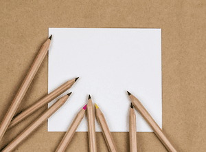

Welcome to My Hobbies Page
Sharing my love for art, journaling, and stationery!
Art
I enjoy experimenting with various art forms such as graphite, watercolor, acrylic, orgami, quilling, etc. Each medium has its own charm:
- Graphite: I love how versatile it is and all you need is one singular good pencil. I like seeing very clear and dark contrast.
- Watercolor: I find watercolors hard to work with becasue of how hard it can be to control and also the necessity to find good paper. However, I still do enjoy the vibrant and fluid nature.
- Acrylic: Acrylic paints are fantastic for bold, colorful artworks. They dry fast and allow me to layer colors quickly!
- Quilling This is an art form that involves rolling, shaping, and gluing strips of paper to create designs. You can do it with minimal materials and it definetly helps in developing you fine motor skills.
Stationery
I'm passionate about stationery! It's always fun to try over enginnered tools and finding the right tools make note-taking more efficient and fun:
- Campus Notebooks: These are my go-to for my school nottaking. They're affordable, durable, and the paper is smooth for easy writing. I use the A5 size because then it's easier to fill a single page which then moltivates me to continue taking more notes.
- Jetstream Pens: These pens are great for everyday writing. From the afforable price, they write smoothly and are good quality. They're also refillable!
- Kokuyo Gloo Liquid Glue: A very interesting take on a glue stick. Dries clear and with no wrinkles.